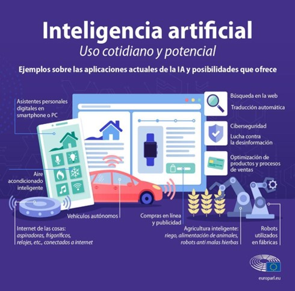
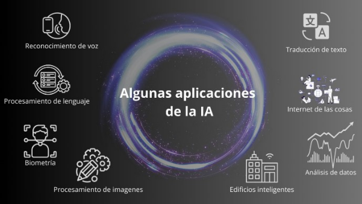
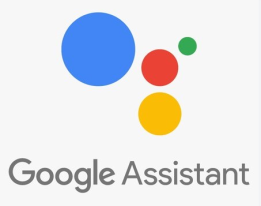

La Inteligencia Artificial ha tenido importantes avances en las últimas décadas al grado tal que está presente en la vida cotidiana, aunque su impacto se ha visto incrementado de una forma exponencial en los últimos meses. Su impacto y alcances se ha evidenciado en varias áreas y esto ocasiona diferentes reacciones que pueden ser desde aceptación o rechazo.
La Inteligencia Artificial tiene un amplio campo de aplicación que van desde el procesamiento de lenguaje, es decir, un reconocimiento de voz, ejemplo de ello son los asistentes de voz como Alexa, este dispositivo, permite reproducir música, configurar alarmas, realizar llamadas, obtener información del clima el diagnóstico de enfermedades, el desarrollo de nuevos tratamientos y la planificación de intervenciones quirúrgicas. En la industria, la Inteligencia Artificial se utiliza para la automatización de procesos, el control de calidad y la optimización de recursos. En el ámbito financiero, la Inteligencia Artificial se utiliza para la detección de fraudes, la gestión de riesgos y la toma de decisiones de inversión. En el transporte, la Inteligencia Artificial se utiliza para el desarrollo de vehículos autónomos y la gestión del tráfico. Y en el ámbito del entretenimiento, la Inteligencia Artificial se utiliza para la creación de videojuegos, la generación de contenido personalizado y la recomendación de productos y servicios.

Disponible en:Noticias Parlamento Europeo. Usos cotidianos y futuros de la inteligencia artificial
Si bien, es una área que está en desarrollo, éste mismo sigue realizándose de forma tal que las nuevas aplicaciones y usos seguirán innovando.
Cabe decir que a partir de la aparición de Chat GPT (Chat Generative Pre-Trained Transformer), la cual es una aplicación de chatbot con la que se puede establecer un diálogo, la difusión de información sobre Inteligencia Artificial aumentó.
Imagen creada con IA (Fotor)
El desarrollo de las Inteligencia Artificial va en rápida evolución y seguirán desarrollándose en los próximos años, por lo que es muy probable que abarque cada vez más áreas de aplicación.
El uso de la Inteligencia Artificial en la vida cotidiana es más común de lo que pensamos. Si realizamos por ejemplo un ejercicio de mencionar tres Inteligencias Artificiales que cada uno de nosotros conozca y su uso en cualquier ámbito, nos darnos cuenta de la frecuencia con la que realmente la usamos.

Para saber más
Revisa el siguiente video para revisar de qué manera aplicamos la inteligencia artificial de forma cotidiana. Dewey University. 10 Ejemplos de IA en tu vida diaria.
La clasificación más general de las Inteligencia Artificial es la siguiente:
 Da clic en cada uno de los títulos para obtener más información.
Da clic en cada uno de los títulos para obtener más información.
Como ya hemos mencionado, uno de los ejemplos más conocidos es el reconocimiento de voz, ésta tecnología permite reconocer y ofrecer una respuesta a la voz humana, dispositivos por control de voz, sistemas de respuesta telefónica para dar información a clientes, asistentes como Siri , Google Assistant, Cortana y Alexa son algunos de ellos.

El ejemplo más conocido es el chatbot que es un programa que comprende preguntas y genera respuestas a las mismas de manera automática. Se puede realizar un diálogo con el chatbot. Traductor de idiomas, realizan el reconocimiento del idioma y se genera la traducción, también proporcionan los subtítulos automáticos. Ejemplo: Google Translate.
En estas podemos encontrar las cámaras de vigilancia utilizadas en el transporte, prevención del crimen, etc. Ahora bien, existen otros usos que se le puede dar a este tipo de inteligencia artificial:
- En temas de ubicación se puede utilizar automóviles con el uso de GPS
- En la industria la aplicación es extensa, podemos mencionar el análisis de datos meteorológico para la toma de decisiones en la agricultura, uso de drones para la reforestación y la aplicación de pesticidas.
- En la medicina se puede utilizar para detectar enfermedades como cáncer de mama y de pulmón. Recientemente en la pandemia se utilizó para detectar con cámaras termográficas posibles personas con COVID 19, esta medida fue utilizada principalmente en aeropuertos
Dalle - E 2 y FreeImage.AI son unos ejemplos conocidos.
No es otra cosa que sistemas de dispositivos físicos interconectados para recopilar y compartir datos a través de internet.
- Las cámaras de seguridad son un ejemplo de ello.
- En marketing, para mejorar la experiencia del cliente utilizando reconocimiento de imagen para proponer vestimenta, accesorios, maquillaje.
- Imágenes 3D de productos para presentarlo en un espacio y acelerar la decisión de compra.
- También se utiliza para pronosticar las ventas de un producto antes de su lanzamiento, proponer compras personalizadas a los clientes. Podemos tener como ejemplo: Amazon Echo y Google Nest.
La climatización en estas construcciones es el resultado de dispositivos que ajustan la temperatura en función del aforo, también automatizan el encendido de las luces lo que beneficia en el ahorro de energía. Utiliza cámaras de seguridad para identificar incendios e intrusiones y emiten un alerta. Hacen uso del reconocimiento facial para controlar el acceso y hacer una identificación del personal. Ejemplo: Torre de ingeniería en la UNAM
http://www.torreingenieria.unam.mx
Para saber más
Para complementar te presentamos algunos ejemplos de uso que se han realizado en la industria con el siguiente video:Podcast Industria 4.0. Ejemplos de inteligencia artificial aplicada a la Industria 4.0 [Video].
 2.1.1 Proyección de la Inteligencia Artificial
2.1.1 Proyección de la Inteligencia Artificial
Podríamos preguntarnos hacia dónde se dirige la Inteligencia Artificial, pues bien, su proyección es amplia pues en el aspecto económico, se dice que “ el mercado de software de IA alcanzará un valor de 134,8 billones de dólares, con un aceleramiento significativo en su crecimiento. Para ser más precisos, el mercado IA creció un 14,4% en 2021, y crecerá hasta un 31,1% en 2025, superando el crecimiento del mercado del software en general” (Payssé, M., 2021)
Igualmente, “se habla de 2025 como el año clave y umbral en el que, las inteligencias artificiales instaladas en sistemas habituales como los ordenadores o los móviles, se pasen a combinaciones con otras tecnologías como la robótica o la realidad aumentada para ofrecer una experiencia más completa y realista”. (ealternativa)
Veamos lo que la propia inteligencia artificial se proyecta a sí misma.
“Según un informe de Gartner, el mercado de software de IA alcanzará un valor de 134,8 billones de dólares en 2025. El informe también prevé que el 55% de las organizaciones en todo el mundo estará en una etapa de “estabilidad” en su IA; que le aportará beneficios transformadores siempre que se seleccionen cuidadosamente los casos de uso”.
A continuación, se presentan algunas de las principales proyecciones de la IA para el año 2025:
La Inteligencia Artificial se utilizará en:
- Una variedad de nuevos productos y servicios, incluyendo coches autónomos, asistentes virtuales y aplicaciones de diagnóstico médico.
- Para mejorar la eficiencia y la productividad en una variedad de industrias, incluyendo la fabricación, la atención médica y la atención al cliente.
- Para abordar algunos de los mayores desafíos del mundo, como el cambio climático y la pobreza.
Sin embargo, es importante tener en cuenta que la Inteligencia Artificial también plantea una serie de riesgos, como el sesgo y la discriminación. Es importante desarrollar y utilizar la Inteligencia Artificial de forma responsable para evitar estos riesgos.
En general, la Inteligencia Artificial tiene el potencial de transformar la forma en que vivimos y trabajamos. A medida que la Inteligencia Artificial continúe desarrollándose, es probable que tenga un impacto cada vez mayor en nuestras vidas.” (12/09/23 bard)
Para saber más
A continuación te presentamos un ejemplo de uso de Inteligencia Artificial para la asistencia de los adultos mayores:TIME. (2019, August 28). Robots Working In Elder Care | TIME [Video]. YouTube.